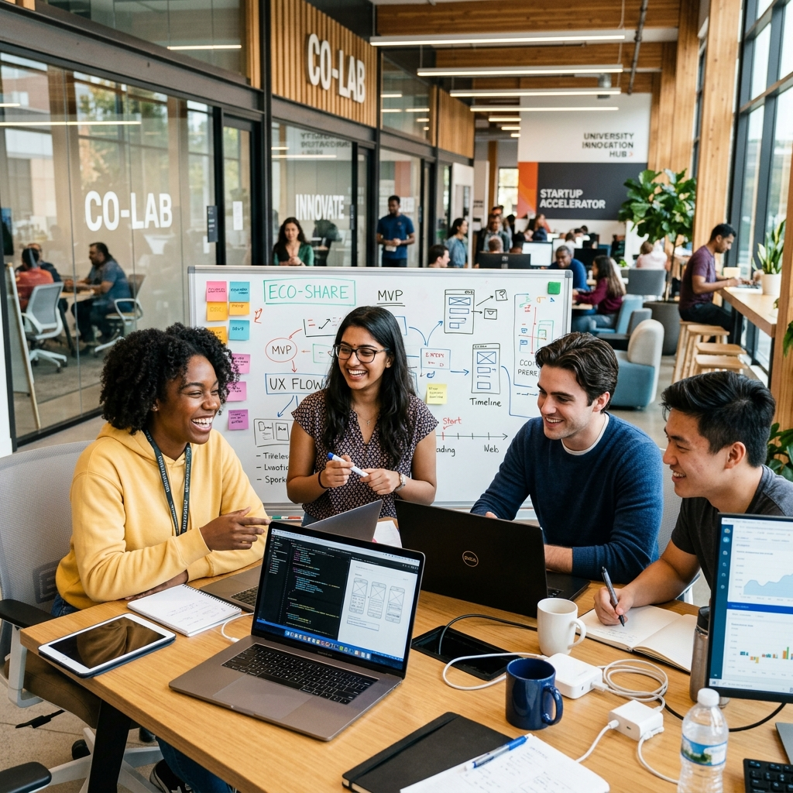

رؤيتنا
أن نكون البيئة الجامعية الأولى والوجهة الرائدة في المملكة لاحتضان المشاريع التكنولوجية، ونقطة الانطلاق الأقوى لتخريج جيل من روّاد الأعمال المبتكرين.
منصة احتضان رقمية تربط طلاب الجامعة الزيتونة بمشرفين أكاديميين، مع تتبع فوري لحالة كل طلب ومراجعة من قِبَل المشرف.

إعلان من حاضنة الزيتونة
أنشئ حسابك بإيميل الجامعة
اختر نوع الاحتضان وأدخل مشروعك
المشرف يراجع طلبك ويرد عليك
انطلق بمشروعك بدعم كامل
حاضنة الزيتونة هي بوابتك الرقمية نحو الريادة. منصة متكاملة تابعة لجامعة الزيتونة الأردنية، صُممت لتمهد الطريق أمام إبداعات الطلاب ومشاريع تخرجهم، عبر ربطهم بنخبة من المشرفين الأكاديميين. نحن نرافقك في رحلة منهجية واضحة لتحويل فكرتك الطموحة إلى مشروع حقيقي وواقع ملموس.
أن نكون البيئة الجامعية الأولى والوجهة الرائدة في المملكة لاحتضان المشاريع التكنولوجية، ونقطة الانطلاق الأقوى لتخريج جيل من روّاد الأعمال المبتكرين.
تمكين طاقات طلبة جامعة الزيتونة وتوجيهها، من خلال توفير منصة رقمية تفاعلية تربط أصحاب الأفكار بالخبرات الأكاديمية، لتطوير مشاريعهم وفق أحدث المعايير.
إرشاد أكاديمي متخصص، ومتابعة حثيثة لكل مرحلة من مراحل بناء المشروع. نحن نوفر لك التقييم والدعم المستمر لضمان تطور فكرتك من المخطط الأولي وحتى التنفيذ النهائي.
“حاضنة الزيتونة ساعدتني على تحويل فكرتي من مجرد مشروع تخرج إلى شركة ناشئة حقيقية. الدعم الأكاديمي والإرشاد كانا لا يقدران بثمن.”
أحمد الخطيب
طالب ريادة أعمال
“التقديم الرقمي والمتابعة المباشرة مع المشرفين جعلا العملية سلسة جداً. أنصح كل طالب بتجربة المنصة.”
سارة المحمود
مشروع تخرج IT
“حصلت على ملاحظات بنّاءة من المشرفين خلال أيام، وتم قبول مشروعي بسرعة. تجربة ممتازة من البداية إلى النهاية.”
محمد العبادي
مشروع يخدم الجامعة
انضم لمئات الطلاب الذين حوّلوا أفكارهم إلى مشاريع حقيقية. قدّم طلبك الآن وابدأ رحلتك الريادية مع حاضنة الزيتونة.
قدّم مشروعك الآن